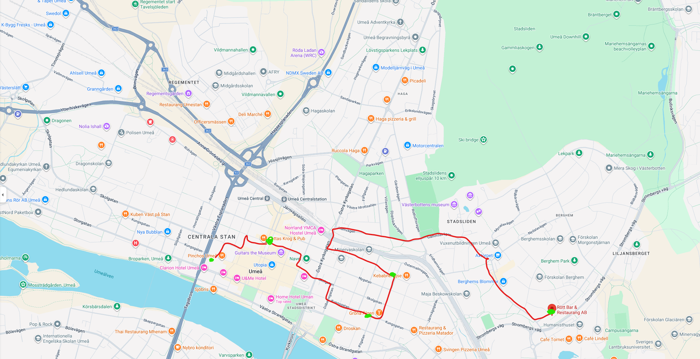

Sträcka

Här ser du tävlingskartan för Bärsaloppet.
Sträckan för loppet som följer den röda linjen. Det finns fem stationer markerade med grönt:
- Station 1: Rött
- Station 2: Kebabnekajse
- Station 3: Gröna elken
- Station 4: Lottas
- Station 5: Pinchos